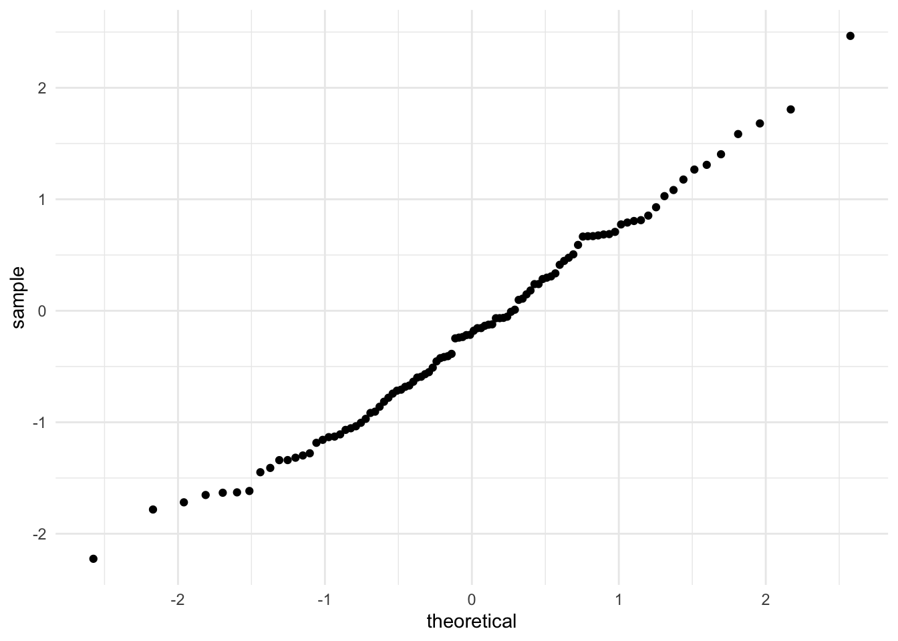

library(rstatix)Model
Einleitung
Der nächste Schritt in unserer R-Pipeline, nachdem wir visuell einen Überblick über die Daten bekommen haben, ist der model Part, mit anderen Worten, statistischen Verfahren. Hier beschäftigen wir uns mit den grundlegenden inferenzstatistischen Verfahren, die ihr aus den Bachelor-Vorlesungen Deskriptive Statistik und Inferenzstatistik kennt.
Das ist natürlich nur ein kleiner Einblick in die statistischen Verfahren, die mit R möglich sind. Es soll euch aber schon mal ein Gefühl für den grundlegenden Aufbau der Funktionen geben, sodass ihr ohne große Probleme auch andere Verfahren benutzen könnt. In vielen Fällen kommt man mit den grundlegenden Verfahren hier auch schon relativ weit.
Die Qual der Wahl
Ähnlich wie in den vorigen Sessions erläutert, gibt es ähnlich zu den Unterschieden zwischen Base-R und dplyr auch bei den inferenzstatistischen Verfahren verschiedene Packages und Funktionen.
Grundsätzlich gibt es hier keine richtigen oder falschen Packages, stattdessen hängt es vom Kontext ab. Manche Packages ermöglichen ziemlich komplexe Analysen, und um sich die als Möglichkeit offen zu lassen, kann es sich lohnen, auch direkt die “einfachen” Analysen eines Projekts damit zu rechnen, damit die verschiedenen Analysen kompatibler miteinander sind. Manche Packages sind von der Syntax möglichst eingängig gestaltet, sodass man als Anfänger besser abgeholt wird. Wiederum andere bieten die gleichen Funktionen, verwenden aber leicht unterschiedliche Berechnungsmethoden, da die Methoden für verschiedene Kontexte verschieden robust sind.
Meistens macht es Sinn mit dem, was man kennt (bzw. was ihr hier kennenlernt), anzufangen. Wenn sich dann eine Datensituation ergibt, die komplexer ist, lässt sich immer noch im Internet recherchieren, welches Package/welche Funktion vielleicht besser geeignet sind. Die Hürde wird dann weniger euer R-Wissen sein, sondern eher euer allgemeines Statistik-Wissen. Unserer Erfahrung nach verbringt man eher mehr Zeit mit der Recherche statistischer Methoden anstatt mit der tatsächlichen Anwendung von R-Funktionen.
Im Rahmen dieser Session zeigen wir euch die Funktionen aus dem rstatix Package, welches standard Base-R Funktionenn wir bspw. t.test(x) Pipe-freundlich macht, und somit direkt im Anschluss an dplyr Pipes verwendet werden kann. In Fällen wo wir doch Base-R Funktionen verwenden, machen wir das kenntlich.
Installation/Aktivierung
Zunächst müssen wir rstatix aktivieren, da es nicht im tidyverse enthalten ist:
Hinweis
Falls rstatix noch nicht installiert ist, tut dies über install.packages("rstatix") in der R-Konsole
Model
Schauen wir uns nun die verschiedenen Möglichkeiten an die R bietet, um unsere Daten zu modellieren, d.h., inferenzstatistisch zu untersuchen. Um hierbei sinnvolle Untersuchungen machen zu können, brauchen wir mehr Datensätze als den iris Datensatz. Importiert bzw. aktiviert daher folgende Datensätze aus dem nycflights13 bzw. datasets Package:
library(nycflights13)
library(datasets)
iris <- read_csv("assets/datasets/iris/iris.csv")
Hinweis:
In R gibt es eine Vielzahl Beispieldatensätzen, die wir bequem aus Packages aktivieren können. Viele sind im Package datasets enthalten, aber es gibt auch eigene Packages für Datensätze wie bspw. nycflights13. Diese Packages müssen wir dann, ähnlich wie bei Funktionen, nicht nochmal explizit definieren sondern können bspw. direkt über flights auf den Datensatz zugreifen.
Datensätze
Hier noch ein paar Worte zu den Datensätzen.
Der
flightsDatensatz beinhaltet Daten zu Verspätungen aller Flüge die in New York City (i.e., JFK, LGA or EWR) im Jahr 2013 gestartet sind.Der
carsDatensatz beinhaltet Geschwindigkeiten und Bremswege von AutosDer
ChickWeightDatensatz beinhaltet Informationen zum Gewicht vs. Alter von Hühnern auf verschiedenen DiätenDer
ToothGrowthDatensatz enthält Informationen Zahnwachstum von 60 MeerschweinchenDer
swissDatensatz enthält Daten zu Fruchtbarkeit in 47 schweizer Provinzen
Voraussetzungen
Wie ihr wisst, gibt es für die sogennannten parametrischen Testverfahren bestimmte Voraussetzungen, die die Daten erfüllen sollten, damit die Tests anwendbar sind und die Auswertung angemessen. Vorbildlich wie wir sind, schauen wir uns diese Tests für die Voraussetzungen zuerst an.
Normalverteilung
Um Rückschlüsse auf die Grundgesamtheit zu ziehen und unsere Daten zu generalisieren, sind normalverteilte Daten wichtig. Zur Erinnerung: Wir wollen, dass unsere Daten in etwa dieser Verteilung gleichen:
Code
normal_data <- data.frame(x = c(-3, 3))
normal_data %>%
ggplot(aes(x)) +
stat_function(fun = dnorm,
geom = "line")+
theme_minimal()Wenn wir uns an unseren iris Datensatz erinnern, so sah dessen Verteilung ziemlich ähnlich aus:
ggplot(data=iris)+
geom_bar(aes(x=sepal_width, fill=species), color="#2b2b2b")+
ylab("Prevalence")+
xlab("Width of Sepal")+
ggtitle("Sepal width of Iris Flower for each species")+
scale_fill_manual(values = metro_colors)+
theme_minimal()
Hinweis
iris Datensatz einlesen, falls nicht mehr im Environment: iris <- read_csv("assets/datasets/iris/iris.csv")
Natürlich müssen wir das noch statistisch überprüfen. Dazu bietet sich der Shapiro-Test an. Dieser testet, ob die Daten signifikant von einer Normalverteilung abweichen. Wenn er signifikant wird, sind die Daten also nicht normalverteilt. Die Syntax ist simpel:
dataset %>%
shapiro_test(variable)
Aufgabe
Führt den Shapiro-Test für die sepal_width Variable durch.
Testen wir das also für die sepal_width Variable:
iris %>%
shapiro_test(sepal_width)
Tipp
rstatix ist quasi ein Wrapper für die Base-R Funktionen, der sie Pipe-freundlich macht (Input & Output). Mit Base-R würde der obige Code & Output so aussehen:
shapiro.test(iris$sepal_width)
Shapiro-Wilk normality test
data: iris$sepal_width
W = 0.98379, p-value = 0.07518Voilá! Die Daten scheinen normalverteilt zu sein. Trotzdem ist der p Wert nur knapp nicht signifikant. Das hat einen Grund:
Je größer jedoch die Stichprobe ist, desto schlechter funktioniert der Shapiro-Wilk Test, da er dann tendenziell zu schnell signifikant wird, obwohl die Daten einigermaßen normalverteilt sind. Daher bietet es sich an, ab ca. N > 50 stattdessen einen QQ-Plot anzuschauen. Ab n > 5000 würde der Test nicht mehr ausgeführt werden.
Hier eine Demonstration, wie ein QQ-Plot mit normalverteilten Daten aussehen sollte. Dazu erstellen wir über rnorm(x) zunächst normalverteilte Daten:
# normalverteilte Werte erzeugen
vec.norm <- rnorm(100, mean = 0, sd=1)Und visualisieren diese dann mit geom_qq(x):
# QQ-Plot
ggplot()+
geom_qq(aes(sample=vec.norm))+
theme_minimal()
Bei einem QQ-Plot werden die Werte, die wir testen, standardisiert und dann gegen die “echte” Standardnormalverteilung geplottet. Wenn unsere Daten perfekt (standard)normalverteilt wären, würde sich eine perfekte 45°-Gerade ergeben. In unserem Fall sieht das größtenteils normalverteilt aus. Auch der Shapiro Test auf den normalverteilten Daten ist viel weniger nah an der Signifikanz:
vec.norm %>%
shapiro_test()Unsere künstlichen Daten oben sind auf jeden Fall nah genug an der “perfekten Gerade” dran.
Frage
Wie sieht es mit den iris Daten aus?
iris %>%
ggplot()+
geom_qq(aes(sample=sepal_width))+
theme_minimal()Auch hier sieht es nach einer Normalverteilung aus. Falls die Daten nicht normalverteilt wären, würde dieses Plot anders aussehen.
Frage
Wie würde die Verteilung aussehen, wenn die Daten nicht normalverteilt wären? Nutzt einen der anderen Datensätze
ChickWeight %>%
ggplot()+
geom_qq(aes(sample=weight))+
theme_minimal()Hier sehen wir keine Normalverteilung, da die Punkte keiner 45° Kurve entsprechen.
Varianzhomogenität
Eine weitere Voraussetzung, die wir überprüfen müssen, ist die Varianzhomogenität. Dabei geht es darum, dass unterschiedliche Gruppen bezüglich einer Variable die in etwa gleiche Varianz haben. Dazu gibt es in R die levene_test(x) Funktion. Testen wir das gleich mit dem flights Datensatz für die dep_delay Variable (Verspätung bei Abflug):
flights %>%
levene_test(dep_delay ~ origin)Wie wir sehen, ist unser p Wert sehr klein, d.h., wir müssen von inhomogenen Varianzen ausgehen.
Gruppenvergleiche
Eines der häufigsten Anwendungsfelder im inferenzstatistischen Bereich sind Gruppenvergleiche. Wie das in R geht, schauen wir uns nun an:
t-Test
Wir wollen zwei Gruppen vergleichen und unsere Datenstruktur ist eine kontinuierliche abhängige Variable & eine dichotome Gruppenvariable.
Zur Veranschaulichung verwenden wir hier den Datensatz ToothGrowth: Hier wurde der Zahnwachstum von Meerschweinchen in Abhängigkeit von verabreichtem Vitamin C untersucht. Die Stichprobe besteht aus 60 Meerschweinchen und sowohl die Verabreichungsmethode (Orangensaft vs. Ascorbinsäure) als auch die Vitamin C-Dosis (0.5, 1 oder 2mg pro Tag) wurden variiert. Da wir beim t-Test nur mit zwei Gruppen arbeiten können, schauen wir uns jetzt nur die Unterschiede durch die Verabreichungsmethode supp an.
Zunächst müssen wir die Faktor-variablen auch als Faktor umwandeln. Wir nennen den neuen Datensatz toothgrowth (kleingeschrieben):
toothgrowth <- ToothGrowth %>% mutate(supp = as.factor(supp),
dose = as.factor(dose))
Hinweis
dose ist ohne diese Umwandlung numeric, was später zu Problemen führen kann.
Hier ein Überblick über die Daten:
toothgrowth %>%
get_summary_stats()
Tipp
get_summary_stats(x) ist quasi das Pipe-Äquivalent zu summary(x)
Über dplyr können wir schnell auf Unterschiede in der Länge schauen in Abhängigkeit von supp.
Aufgabe
Berechnet den Mittelwertsunterschied für len in Abhängigkeit von supp mit Hilfe von group_by(x)
toothgrowth %>%
group_by(supp) %>%
summarise(mean=mean(len))Deskriptiv sehen wir einen Unterschied. Schauen wir uns den Unterschied hinsichtlich des Zahnwachstums auch als Boxplot an:
ggplot(toothgrowth)+
geom_boxplot(aes(x=supp, y=len,fill=supp))+
scale_fill_manual(values=metro_colors)+
theme_minimal()Auch hier sehen wir den Unterschied schön. Das wollen wir nun inferenzstatistisch testen.
Syntax
Ähnlich wie beim levene_test(x) oben ist der Aufbau beim t-Test hier wie folgt:
data %>%
t_test(dependent_variable ~ group)Wir sehen, dass wir über den Tilde-Operator ~ definieren, was die AV (dependent_variable) und was die UV (group) ist. In R wird er häufig verwendet, um einen Zusammenhang, eine Abhängigkeit oder ein Modell zu symbolisieren.
Natürlich gibt es innerhalb von t_test() mit Argumenten Möglichkeiten um
einen t-Test für eine Stichprobe durchzuführen: z.B.
mu = 100einen t-Test für abhängige Stichproben durchzuführen:
paired = TRUEeinen gerichteten t-Test durchzuführen: z.B.
alternative = "less"bei nicht vorliegender Varianzhomogenität stattdessen den Welch-Test anzuwenden:
var.equal = FALSE
Anwendung
Wenden wir unser Wissen nun auf den ToothGrowth Datensatz an:
toothgrowth %>%
t_test(len ~ supp,var.equal = TRUE)
Hinweis
Die rstatix Funktionen heißen netterweise fast immer exakt so wie die äquivalenten Base-R Funktionen, nur dass statt . ein _ verwendet wird: t.test() vs. t_test().
Nonparametrisch
Falls die Voraussetzungen nicht erfüllt sein sollten, so gibt es natürlich auch nonparametrische Alternativen wie den Wilcoxon Rank Sum Test:
toothgrowth %>%
wilcox_test(len ~ supp)ANOVA
Wenn wir zwei oder mehr Gruppen miteinander vergleichen wollen, rechnen wir eine ANOVA. Zur Veranschaulichung können wir hier bei den Meerschweinchendaten bleiben, da die Dosis-Variable drei Faktorstufen hat:
levels(toothgrowth$dose)[1] "0.5" "1" "2"
Tipp
Wir sehen, es lohnt sich manchmal, auch Base-R Syntax zu verwenden, wenn wir schnell an Infos kommen wollen
Rechnen wir die ANOVA:
toothgrowth %>%
anova_test(len ~dose)Die Funktion anova_test() gibt uns direkt das erwartete Ergebnis aus und zeigt an, dass es signifikante Mittelwertsunterschiede gibt.
Tipp
Base-R würde hier wie folgt funktionieren:
tooth.aov <- aov(len ~ dose, toothgrowth)
summary(tooth.aov) Df Sum Sq Mean Sq F value Pr(>F)
dose 2 2426 1213 67.42 9.53e-16 ***
Residuals 57 1026 18
---
Signif. codes: 0 '***' 0.001 '**' 0.01 '*' 0.05 '.' 0.1 ' ' 1Die Funktion gibt uns nicht direkt das Ergebnis, was wir von einer ANOVA erwarten, sondern fittet (=“baut”) erst mal nur das Modell. Wenn wir das ANOVA-Modell auswerten wollen, müssen wir uns das aov-Ergebnis über summary() zusammenfassen lassen
Komplexere Modelle
Komplexere Modelle mit mehreren Faktoren lassen sich natürlich auch realisieren. Dafür ein neues Beispiel: Im Datensatz ChickWeight wurde das Gewicht von Küken seit Geburt getrackt. Es sind verschiedene Messzeitpunkte und die Art der Ernährung enthalten.
ChickWeight %>% tibble()ChickWeight %>%
get_summary_stats()Hier schauen wir uns direkt nur rstatix an, da das die eindeutig angenehmere Umsetzung ist.
ChickWeight %>%
anova_test(weight ~ Diet + Time + Error(Chick/Time))ANOVA Table (type III tests)
$ANOVA
Effect DFn DFd F p p<.05 ges
1 Diet 3 41 5.075 4.00e-03 * 0.161
2 Time 11 451 280.945 6.41e-194 * 0.769
3 Diet:Time 33 451 3.766 9.34e-11 * 0.118
$`Mauchly's Test for Sphericity`
Effect W p p<.05
1 Time 2.68e-17 1.03e-251 *
2 Diet:Time 2.68e-17 1.03e-251 *
$`Sphericity Corrections`
Effect GGe DF[GG] p[GG] p[GG]<.05 HFe DF[HF] p[HF]
1 Time 0.114 1.26, 51.48 2.01e-24 * 0.116 1.28, 52.34 8.63e-25
2 Diet:Time 0.114 3.77, 51.48 1.00e-02 * 0.116 3.83, 52.34 1.00e-02
p[HF]<.05
1 *
2 *
Tipp
Es gibt in rstatix auch eine alternative Schreibweise, die manche vllt. besser finden:
ChickWeight %>%
anova_test(dv = weight,
between = Diet,
within = Time,
wid = Chick)Bei Daten mit Messwiederholung müssen wir spezifizieren, welcher Faktor mehrmals gemessen wurde und an welcher Variable erkannt wird, welche Messungen zu welchem “Probanden” gehören. Das lässt sich durch den Term Error(ProbandenID/wiederholterFaktor) ausdrücken.
anova_test() testet netterweise die Sphärizität direkt mit. Wenn der Mauchly-Test signifikant wird, müssen wir die messwiederholten Faktoren (hier: Time und die Interaktion Diet:Time) im unteren Abschnitt des Outputs interpretieren. Die Spalten mit “GG” sind dabei korrigiert nach Greenhouse-Geisser, die Spalten mit “HF” nach Huynh-Feldt.
Kovariaten können wir in anova_test() über das Argument covariate = einfügen, so wie bei dv =, between = usw.
Noch mehr Faktoren/Variablen lassen sich über c(x) verknüpfen, z.B. between = c(Diet, Species)
Post Hoc Test
Wenn eine ANOVA signifikant wird, interessiert uns meistens noch, welche/r der Mittelwertsunterschiede dafür verantwortlich ist/sind. In Bezug auf unser Meerschweinchen-Beispiel hängt das Zahnwachstum len offensichtlich von der Dosis dose ab, aber bisher wissen wir nicht, ob die höchste Dosis zu mehr Wachstum als die anderen beiden führt, oder ob sich alle signifikant voneinander unterscheiden, oder ob es nur einen Unterschied im Bezug zur niedrigsten Dosis gibt usw.
toothgrowth %>%
tukey_hsd(len ~ dose)Die Funktion tukey_hsd erlaubt als Input entweder eine Formel (wie hier) oder das Ergebnis von aov() oder lm(). Der Output von anova_test() funktioniert hier nicht als Input!
Nonparametrisch: Kruskal-Wallis Rank Sum Test
Sollten die Voraussetzungen nicht erfüllt sein, können wir den Kruskal-Wallis Test nach gleicher Syntax rechnen:
# rstatix
toothgrowth %>%
kruskal_test(len ~ dose)Zusammenhänge
Neben Mittelwertsvergleichen bzw. Gruppenvergleichen sind ein weiterer wichtiger Punkt, der uns interessiert Zusammenhänge.
Korrelation
Wenn wir den Zusammenhang zwischen zwei Variablen feststellen wollen und zwei kontinuierliche Variablen haben, können wir zunächst die Korrelation berechnen.
Für dieses Beispiel haben wir den cars Datensatz, der Geschwindigkeit und Bremsweg von Autos enthält.
carsget_summary_stats(cars)ggplot(cars)+
geom_point(aes(speed, dist))+
theme_minimal()
cars %>%
cor_test(speed, dist)Base R kann Korrelationen berechnen, hat aber standardmäßig keinen Test auf Signifikanz enthalten. Hier wird der Nutzen von rstatix besonders deutlich, und wir sehen dass die cor_test(x) Funktion uns hier eine signifikante Korrelation von .81 zeigt.
Nonparametrisch: Spearman & Kendall
Nonparametrische Korrelationsberechnungen lassen sich über das Argument method spezifizieren.
cars %>%
cor_test(speed, dist, method = "spearman")Regression
Wenn wir einen Schritt weitergehen wollen, und Werte vorhersagen, relevante Prädiktoren für eine bestimmte abhängige Variable identifizieren und das Modell mit bestem Fit finden wollen, bietet sich eine Regression an. Auch das ist in R kinderleicht.
rstatix hilft uns hier leider nicht mehr weiter, aber Base-R funktioniert hier auch sehr gut.
Die Datenstruktur sollte hier eine kontinuierliche abhängige Variable & kategoriale/kontinuierliche Prädiktoren beinhalten.
Hier haben wir als Datenbeispiel den Datensatz swiss, in dem die Fertilität der Population der 47 französisch-sprachigen Provinzen in der Schweiz erfasst wurde. Die weiteren Variablen:
Agriculture: % of males involved in agriculture as occupationExamination: % draftees receiving highest mark on army examinationEducation: % education beyond primary school for drafteesCatholic: % ‘catholic’ (as opposed to ‘protestant’)Infant.Mortality: live births who live less than 1 year
Schauen wir uns das an:
swiss
Aufgabe
Berechnet den Zusammenhang zwischen Fertility und weiteren Variablen. Was fällt auf?
swiss %>%
cor_test(Fertility,Agriculture)Wir sehen Zusammenhänge und wollen nun ein multiples Regressionsmodell rechnen. Die Syntax dafür ist wie folgt:
model <- lm(criterion ~ predictor1+predictor2+predictor3,dataset)
Hinweis
Um den Output sinnvoll interpretieren zu können, müssen wir den Output unserer lm(x) Funktion in einem Objekt speichern. Dort sind alle relevanten Daten enthalten, und wir können es dann später über die summary(x) Funktion verwenden.
Legen wir nun also mit dem swiss Datensatz los:
swiss.lm <- lm(Fertility ~ Agriculture + Examination + Education + Catholic, swiss)
summary(swiss.lm)
Call:
lm(formula = Fertility ~ Agriculture + Examination + Education +
Catholic, data = swiss)
Residuals:
Min 1Q Median 3Q Max
-15.7813 -6.3308 0.8113 5.7205 15.5569
Coefficients:
Estimate Std. Error t value Pr(>|t|)
(Intercept) 91.05542 6.94881 13.104 < 2e-16 ***
Agriculture -0.22065 0.07360 -2.998 0.00455 **
Examination -0.26058 0.27411 -0.951 0.34722
Education -0.96161 0.19455 -4.943 1.28e-05 ***
Catholic 0.12442 0.03727 3.339 0.00177 **
---
Signif. codes: 0 '***' 0.001 '**' 0.01 '*' 0.05 '.' 0.1 ' ' 1
Residual standard error: 7.736 on 42 degrees of freedom
Multiple R-squared: 0.6498, Adjusted R-squared: 0.6164
F-statistic: 19.48 on 4 and 42 DF, p-value: 3.95e-09Mit diesem Output können wir feststellen, welche Prädiktoren signifikant mit der Fertilität zusammenhängen, kontrolliert für die anderen Prädiktoren. Auch hier sehen wir wieder: lm(x) baut nur das Modell, erst summary(x) wertet es aus. In dem Fall gibt es kein Äquivalent von rstatix.
Wie oben erwähnt, kann ein anderes mögliches Ziel einer Regression sein, das Regressionsmodell mit dem besten Fit zu den Daten herauszufinden, also nur Prädiktoren nach dem Prinzip “so viel wie nötig, so wenig wie möglich” im finalen Modell zu behalten. Dafür werden mehrere Regressionsgleichungen bezüglich ihrer Varianzaufklärung miteinander verglichen.
# Modelle bauen
swiss.lm1 <- lm(Fertility ~ 1, swiss)
swiss.lm2 <- update(swiss.lm1, ~. + Education)
swiss.lm3 <- update(swiss.lm2, ~. + Catholic)
# Modelle vergleichen
anova(swiss.lm1, swiss.lm2, swiss.lm3)
Tipp
Mithilfe der Funktion update() können wir uns sparen, das bisherige Modell noch mal komplett einzutippen. Sie funktioniert nach folgendem Prinzip:
update(old_model, new_model)Mit ~. kürzen wir das alte Modell ab, danach ergänzen wir neue Prädiktoren und/oder Interaktionen.
Die Funktion anova(x) ist potentiell verwirrend: Wir rechnen hier offensichtlich keine ANOVA, wie wir sie weiter oben kennengelernt haben. Wir führen allerdings schon eine “Analyse der Varianzen” durch - nur beziehen sich die Varianzen auf jeweils die aufgeklärte Varianz der Regressionsmodelle. anova(x) kann als Input nur “fitted model objects” verwerten, also bereits erstellte Modelle, und gibt als Output einen Vergleich dieser Modelle.
Ansonsten lassen sich Messwiederholungen genauso wie in der “Formelschreibweise” der ANOVA über + Error(ProbandenID/messwiederholteVariable) spezifizieren.
Interaktionen können wir in die Formel durch * oder : einbauen: Fertility ~ Education*Catholic
Ressourcen

Ganz schön viel? Glücklicherweise gibt es im Internet eine Vielzahl extrem hilfreicher Websites, auf denen wir uns informieren können:
Nächste Session
In der nächsten Session werden wir sehen, wie wir unsere Ergebnisse berichten können.